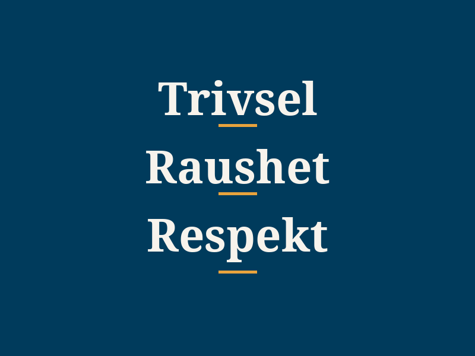

Om Mokollen skole

Mokollen skole er en kristen 1.–10.-skole som skal sikre at alle elever opplever fellesskap, læringsglede og mestring. Vi ønsker elever fra alle trosretninger velkommen.

Skolens visjon og verdier
Våre tre kjerneverdier er trivsel, raushet og respekt. I tillegg bygger vi på kristne grunnprinsipper: respekt for skaperverket, gjensidig respekt etter prinsippet "Alt dere vil at andre skal gjøre mot dere, skal også dere gjøre mot dem" (Matt. 7,12), og en grunnleggende forståelse av at hvert menneske har en egenverdi og fortjener omsorg, fordi hver og en er skapt av Gud. Vi følger et samarbeidsbasert verdigrunnlag forankret i adventistisk tro og gjeldende opplæringslov.
En verdifull skolegang
Skolen er en av de viktigste arenaene i barn og unges liv, og påvirker verdier, holdninger, livssyn og selvforståelse. Mokollen skole ønsker å skape læringsglede og utvikle både faglig og sosial læringslyst, i et miljø bygget på kristne prinsipper.
Fremme kontinuerlig læring
Elevene skal oppleve faglig mestring og få hjelp når de trenger det.
Vise omsorg og respekt
Alle elever skal oppleve et trygt og inkluderende miljø.
Vise engasjement og glede
Godt samarbeid mellom elever, og mellom lærer og elev.
Praktisere anerkjennelse og inkludering
SMART-oppvekst og verdier elevene tar med seg videre.

Sosial og faglig lærelyst
Sosial trivsel er med på å skape et positivt og stimulerende læringsmiljø som fremmer læringslyst. Vi har små klasser, slik at lærerne kjenner elevene godt og kan tilpasse den faglige oppfølgingen til den enkelte. Vi bruker SMART-metodikken fra 1. til 10. trinn for å utvikle elevenes sosiale kompetanse, og har et eget trivselsprogram der elever organiserer aktiviteter i friminuttene.
Videoer og artikler om Mokollen
"Her vil man få en uforglemmelig og verdifull skolegang"dt.no, om rektor Tone Olafsson og Mokollen skole
- "– Fikk endelig den hjelpen jeg trengte" — sb.no
- "På denne skolen bruker de skogen som klasserom" — nettavisen.no